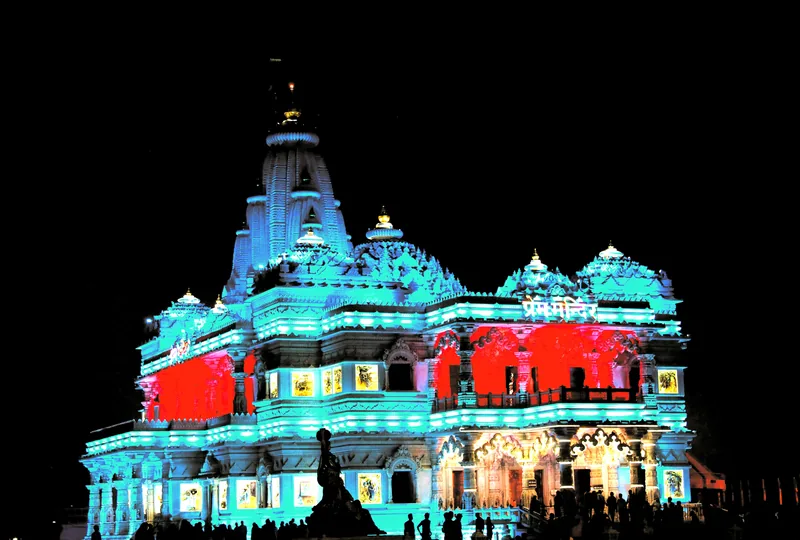

Home / Blog / Mathura Vrindavan VIP Darshan

In this guide
Mathura and Vrindavan, located on the banks of the Yamuna River, form the heart of the sacred Braj Bhoomi. Attracting millions of devotees seeking blessings from Radha-Krishna, the narrow streets and historic temples routinely experience heavy traffic. On weekends, national holidays, and major festivals (like Janmashtami, Radhashtami, Holi, and Jhulan Yatra), the crowd at **Banke Bihari Temple** and **Prem Mandir** can become extremely chaotic. This guide covers entry rules, timing hacks, security checkpoints, and options for a comfortable family pilgrimage.
The Vrindavan Crowd Challenge
Unlike newer corridors with massive plazas, Vrindavan is a heritage town with highly compact lanes. Reaching Banke Bihari Mandir requires walking through narrow pathways (Galiyas) where vehicles are not allowed. During peak hours, crowd control barricades are put in place, creating long wait times. If you are traveling with elderly parents or young toddlers, visiting without prior queue knowledge can be highly stressful. Proper planning of slots is essential.
Banke Bihari VIP Darshan Rules & Timings
Many online portals advertise fake fast-track passes for Banke Bihari. Please note the official regulations:
- No Paid VIP Tickets: The Banke Bihari Temple Trust does not offer any online or paid VIP entry tickets. Entry is free for everyone through the main security lanes.
- Queue Timings: The temple follows distinct summer and winter schedules. Generally, it opens in two daily slots:
- Morning Shringar Slot: 07:45 AM to 12:00 PM
- Evening Rajbhog/Shayan Slot: 05:30 PM to 09:30 PM
- Best Timing Hack: To avoid heavy crowd blocks, report to the temple gates by **07:30 AM** (before gates open) or visit on **Tuesdays, Wednesdays, and Thursdays**. Weekends (Friday to Sunday) see massive crowds from Delhi-NCR.
Prem Mandir & Musical Fountain Show
Prem Mandir is a stunning white marble temple complex created by Jagadguru Kripalu Parishat. It features magnificent carvings depicting Radha Krishna's leelas.
- Timings: Open daily from 08:30 AM to 12:00 PM and 04:30 PM to 08:30 PM.
- Dynamic Lighting: The temple exterior is illuminated with changing colored LED displays starting at dusk (~06:30 PM).
- Musical Fountain Show: Runs daily from **07:00 PM to 07:30 PM** in the garden area. The entry is free, but you should arrive at the seating arena by 06:45 PM to secure a clear view.
Krishna Janmabhoomi Rules & Security
The Shri Krishna Janmabhoomi Temple complex in Mathura marks the exact birthplace of Lord Krishna. Due to security protocols, entry rules are strict:
| Rule Category | Guidelines / Prohibitions | Locker Availability |
|---|---|---|
| Electronic Items | Strictly Prohibited (Mobiles, Smartwatches, Cameras, Keys) | Free locker counter near Gate No. 1 & 3 |
| Personal Accessories | Bags, leather belts, and tobacco products are not allowed. | Available at main gate counters |
| Temple Entry Slots | 05:00 AM - 12:00 PM & 04:00 PM - 09:30 PM daily. | N/A |
Hassle-Free Guided Braj Tour Packages
If you want a comfortable pilgrimage for your family, booking a managed travel package with a registered agency is the most reliable option. At Ayodhya Dharshan travels, we organize premium, custom **Mathura Vrindavan tour packages from Delhi, Ahmedabad, and Mumbai**:
- Braj Local Guides: Local guide assistance who know the safest corridors, entry points, and queue status of Banke Bihari.
- Premium Cab Transfers: Private AC vehicles with permitted commercial permits for smooth drop-offs at Vrindavan multi-level parking.
- Pre-booked Hotels: Comfortable stays at 3★ and 4★ hotels on Vrindavan-Chattikara Road to avoid town traffic.
- Braj Darshan Itinerary: Covering Krishna Janmabhoomi, Dwarkadhish Mandir, Vishram Ghat (Mathura Yamuna Aarti), Nidhivan, Prem Mandir, and Banke Bihari Mandir.
Plan Your Mathura Vrindavan Yatra
Book all-inclusive family yatra packages with 24/7 on-road support and comfortable hotels.